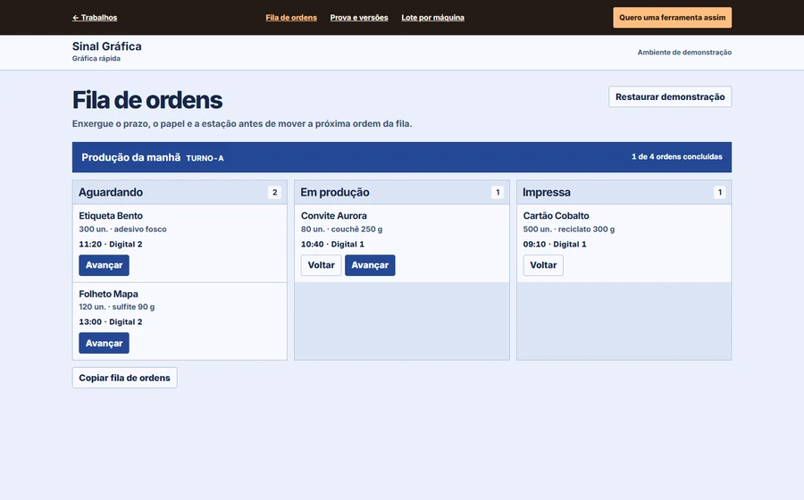
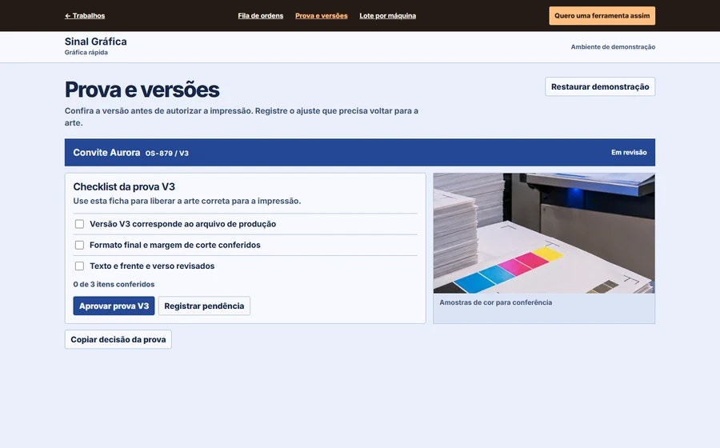
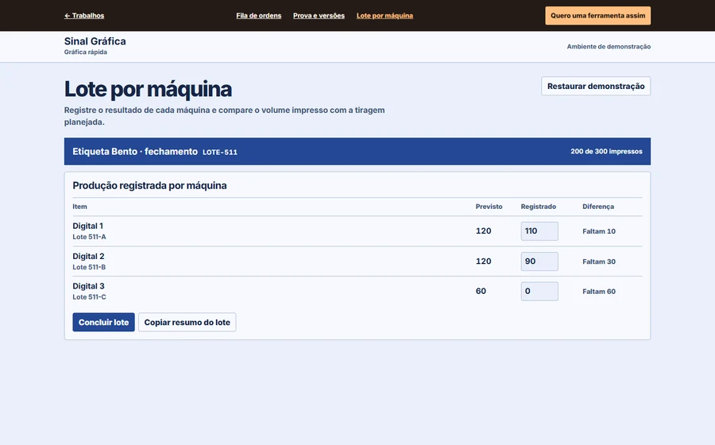

Sinal Gráfica
Controle ordens, provas e lotes sem perder a versão aprovada. Escolha uma das três experiências para testar o fluxo.

Fila de ordens
Enxergue o prazo, o papel e a estação antes de mover a próxima ordem da fila.

Prova e versões
Confira a versão antes de autorizar a impressão. Registre o ajuste que precisa voltar para a arte.

Lote por máquina
Registre o resultado de cada máquina e compare o volume impresso com a tiragem planejada.